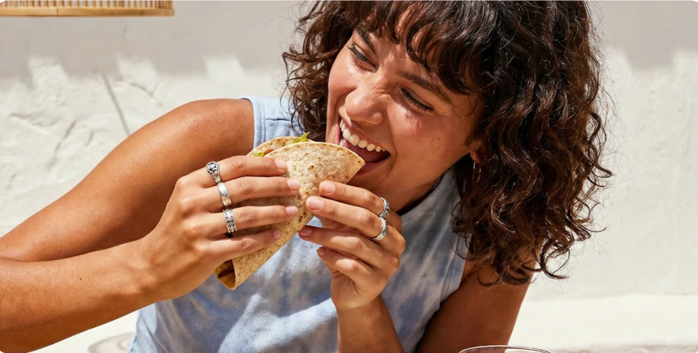

Hệ Vi Sinh Đường Ruột – Vì Sao Nó Quan Trọng Đối Với Sức Khỏe?
Bổ sung thực phẩm giàu chất xơ là một bước đơn giản nhưng mạnh mẽ: giúp cải thiện sức khỏe tinh thần, giảm cảm giác thèm ăn, tăng cảm giác no và giảm viêm trong cơ thể.
Bổ sung thực phẩm giàu chất xơ là một bước đơn giản nhưng mạnh mẽ: giúp cải thiện sức khỏe tinh thần, giảm cảm giác thèm ăn, tăng cảm giác no và giảm viêm trong cơ thể.

Hệ vi sinh đường ruột (gut microbiota) là tập hợp hàng nghìn tỷ vi sinh vật sống trong hệ tiêu hóa của bạn. Chúng đóng vai trò quan trọng trong việc phân giải thức ăn, hỗ trợ hệ miễn dịch, sản xuất vitamin và thậm chí ảnh hưởng đến sức khỏe tổng thể.
Điều thú vị là chất xơ trong trái cây, rau củ, ngũ cốc nguyên hạt và các loại đậu chính là nguồn thức ăn cho những vi sinh vật này. Khi lên men chất xơ, chúng tạo ra các axit béo chuỗi ngắn có lợi, giúp củng cố hàng rào bảo vệ ruột, giảm viêm và hỗ trợ sức khỏe chuyển hóa, chẳng hạn như kiểm soát đường huyết tốt hơn.
Khi sự cân bằng của hệ vi sinh đường ruột bị phá vỡ (còn gọi là loạn khuẩn đường ruột – dysbiosis), tình trạng này có liên quan đến nhiều vấn đề sức khỏe khác nhau, từ các bệnh rối loạn chuyển hóa đến các bệnh tự miễn.
Vậy Làm Thế Nào Để Hỗ Trợ Sức Khỏe Đường Ruột?
Chất xơ là một trong những dưỡng chất quan trọng nhất đối với sức khỏe đường ruột. Chất xơ nuôi dưỡng các vi khuẩn có lợi, giúp chúng phát triển và sản sinh ra những hợp chất hỗ trợ sức khỏe của bạn. Hãy cố gắng bổ sung đa dạng các nguồn chất xơ như rau củ, trái cây, ngũ cốc nguyên hạt, các loại đậu, các loại hạt và hạt giống.
Các loại chất xơ khác nhau sẽ nuôi dưỡng những nhóm vi khuẩn khác nhau. Chế độ ăn của bạn càng đa dạng thì hệ vi sinh đường ruột càng phong phú và có khả năng chống chịu tốt hơn.
Nếu bạn chưa quen với việc tiêu thụ nhiều chất xơ, hãy tăng lượng chất xơ một cách từ từ. Đồng thời, hãy nhớ uống đủ nước để hỗ trợ quá trình tiêu hóa.
Chất béo không bão hòa (có trong các thực phẩm như cá béo, các loại hạt, hạt giống, dầu ô liu hoặc dầu hạt cải) giúp tạo ra một môi trường đường ruột khỏe mạnh hơn. Ngược lại, việc tiêu thụ quá nhiều chất béo bão hòa có thể gây tác động tiêu cực đến hệ vi sinh đường ruột.
Sức khỏe đường ruột là một lĩnh vực đang ngày càng được nghiên cứu sâu rộng hơn. Tuy nhiên, có một điều đã được chứng minh rõ ràng: những thói quen nhỏ nhưng được duy trì đều đặn — chẳng hạn như ăn nhiều chất xơ hơn và xây dựng một chế độ ăn đa dạng — có thể tạo ra những thay đổi tích cực đáng kể cho sức khỏe theo thời gian.
Hãy bổ sung thêm một phần trái cây vào thực đơn của bạn ngay hôm nay!